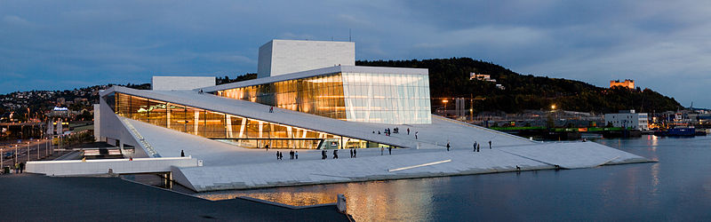

2) TIPO DE MIME

2) TIPO DE MIME
3) TIPO DE MIME E ART DIRECTION
4) High-DPI

5) High-DPI e art directin

6) High-DPI e tipo de mime

7) High-DPI, tipo de mime e art direction

8) sizes

Clique no botão para obter o URL da imagem